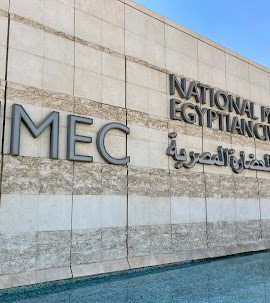
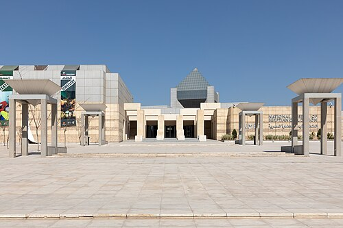

The National Museum of Egyptian Civilization is a museum located in Fustat, Cairo, covering an area of 33.5 acres. It houses fifty thousand artifacts that tell the story of the development of Egyptian civilization, showcasing the achievements of the Egyptian people in various fields of life from the dawn of history to the present day. The museum also contains models, photographs, manuscripts, oil paintings, works of art, and artifacts from the Stone Age, Pharaonic, Greco-Roman, Coptic, Arab, Sudanese, and modern periods. The museum overlooks a natural lake, Ain El Sira Lake.
The idea for the National Museum of Egyptian Civilization dates back to 1982 when UNESCO launched an international campaign to establish the National Museum of Egyptian Civilization and the Nubian Museum in Aswan. In 1999, the museum's current location in Fustat was chosen, replacing its previous site on Gezira Island. Archaeological excavations at the museum site took place from 2000 to 2005, and the foundation stone for the museum building was laid in 2002, following the excavations carried out in 2000. The museum was officially opened on April 3, 2021.
I will now share my experience:
It's a colossal museum, but it doesn't compare to the Grand Egyptian Museum in Giza. I was literally amazed as I moved around inside. First, there are the attractions and gift shops for foreign tourists, as well as an external walkway leading to the lake. There's also a large lounge area for tea, coffee, and sweets. To the left is an exhibition called "Spirit and Love," and to the right are the costumes from the museum's opening ceremony. Then we enter through the large gate at the front. Here are all the exhibits, starting from the life of the ancient Egyptians up to the discoveries of our present time. Inside it is the statue of Akhenaten that we talked about earlier, as well as the floor mosaics. In this place there is an elevator and a staircase to go down to the lower part of the museum, which contains the bodies of the mummies that were discovered.